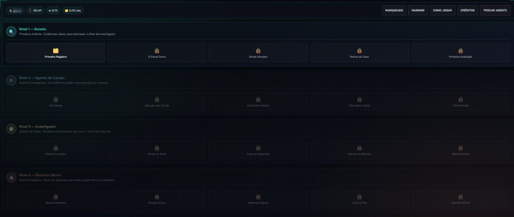
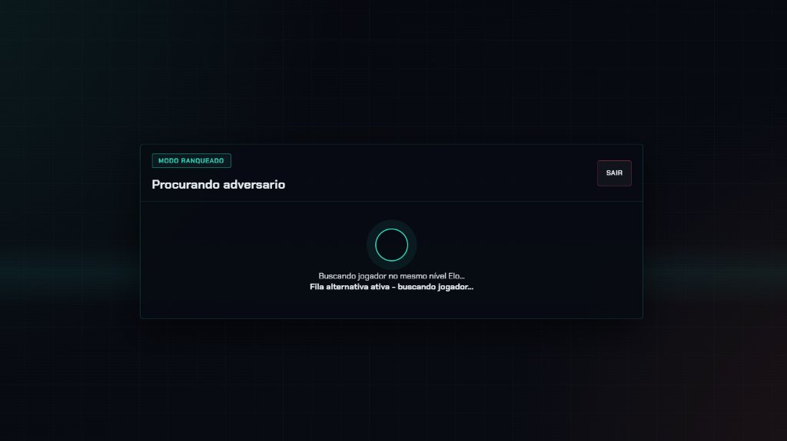

O desafio
Treinar analistas para registrar casos de forma padronizada é repetitivo. A ideia foi transformar esse aprendizado em uma investigação com narrativa, progressão e competição saudável.
HTML · CSS · JavaScript · Multiplayer
Jogo interativo de investigação para treinar a construção correta de registros de Risk. São 5 níveis e 100 casos, com perfis de jogadores, ranking da equipe e um modo ranqueado multiplayer online.
Ver no GitHub
Treinar analistas para registrar casos de forma padronizada é repetitivo. A ideia foi transformar esse aprendizado em uma investigação com narrativa, progressão e competição saudável.
Primeiros indícios, com evidências claras para treinar o olhar de investigador.
Padrões emergentes: as evidências pedem mais atenção ao contexto.
Cruzamento de pistas: detalhes extras testam seu foco, nem tudo importa.
Casos complexos: pares de respostas parecidas exigem leitura cuidadosa.
O desafio máximo rumo ao registro perfeito.
Apelidos de jogadores foram ocultados nos prints.

